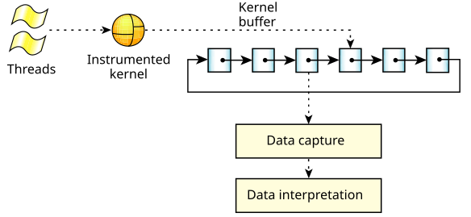

The QNX OS System Analysis Toolkit (SAT) consists of the following main components:
You can also trace and analyze events under control of the Integrated Development Environment (IDE).

The QNX OS instrumented kernel includes a small, highly efficient event-gathering module. As threads run, this kernel module continuously intercepts information about what the kernel is doing, generating timestamped and CPU-stamped events that are stored in a ring of buffers. Because the tracing occurs at the kernel level, the SAT can track the performance of all processes, including the data-capturing program.
The kernel buffer is composed of many small trace buffers. Although the number of buffers is limited only by the amount of system memory, it's important to understand that this space must be managed carefully. If all of the events are being traced on an active system, the number of events will be quite large.
To allow the instrumented kernel to write to one part of the kernel buffer space and store data in another part of it simultaneously, the trace buffers are organized as a ring. As the buffer data reaches a high-water mark (about 70% full in linear mode, or 90% in ring mode), the event-gathering module raises an _NTO_HOOK_TRACE synthetic interrupt to notify the data-capture program, passing the index of the buffer. The data-capture program can then retrieve the buffer and save it in a storage location for offline processing or pass it to a data interpreter for runtime analysis. In either case, after the buffer has been emptied, it's again available for use by the kernel.
The QNX OS includes a utility, tracelogger, that you can use to capture data. This service receives events from the instrumented kernel and saves them in a file or sends them to a device for later analysis.
Because the tracelogger may write data at rates well in excess of 20 MB/minute, running it for prolonged periods or running it repeatedly can use up a large amount of space. If disk space is low, erase old log files regularly. (In its default mode, tracelogger overwrites its previous default file.)
For more information, see the
Capturing Trace Data
chapter in this guide, the entry for
tracelogger
in the Utilities Reference, and the entry for
TraceEvent()
in the C Library Reference.
For more information, see the
Interpreting Trace Data
chapter in this guide, as well as the entry for
traceprinter
in the Utilities Reference.
The QNX Momentics IDE provides a graphical interface for
capturing and examining trace events.
The IDE lets you filter events, zoom in on ranges of them, examine their data,
save subsets of events, and more.
For details, see the
Analyzing System Behavior
chapter of the IDE User's Guide.